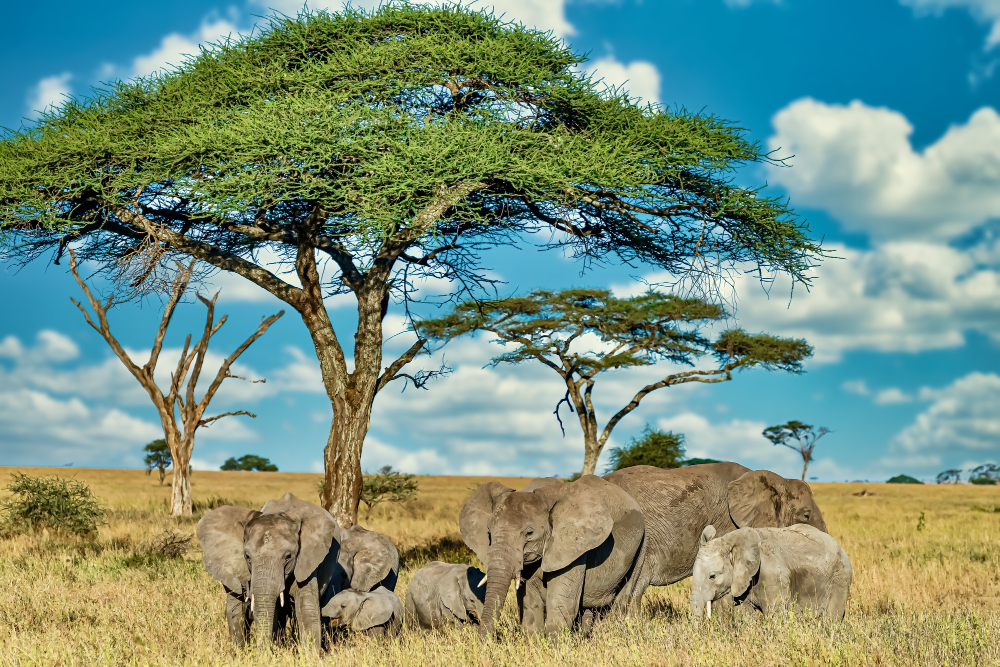
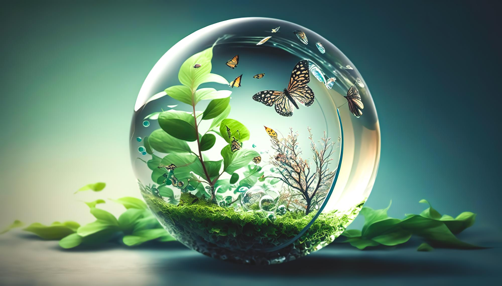

As humans, we have the unique ability to learn and grow. However,
as we advance, we must also be aware of our impact on the environment.
In recent years, we have witnessed an increase in natural disasters,
deforestation, and climate change. It is essential for us to adapt to
these challenges and find solutions that balance human needs with
environmental protection.
Projects
Project #1
If you’re looking for ways to contribute to society, there
are many things you can do to help other humans. For example,
you can volunteer your time or donate to a charity or non-pro
fit organization.

Project #2
If you’re interested in learning more about animals, you
can explore the Wikipedia page on animals. It provides a
comprehensive overview of the animal kingdom, including its
classification, characteristics, and evolution.

Project #3
While there are many factors that contribute to a good environment,
such as a well-organized space, the presence of plants, and the overall
atmosphere, here are five key signs of a good environment The United
Nations Environment Programme (UNEP).
The future of our planet is in our hands, and by adopting environmentally
friendly habits, we can contribute to a cleaner and healthier world.
Reduce, Reuse, Recycle: Implement a recycling system at home, reducing
waste and making responsible decisions about what goes into landfills.
Switch to Energy-Efficient Lighting: Invest in energy-efficient LED bulbs,
which use up to 80% less energy than traditional incandescent bulbs.
Compost: If you have a garden or space for a compost bin, start composting
your food scraps and yard waste.Educate Yourself and Others: Share
information about environmental issues and ways to reduce our impact
on the planet
Go Solar: If possible, install solar panels on your roof to harness the
sun's energy and reduce your reliance on fossil fuels.
Choose Environmentally Friendly Transportation: Consider walking, cycling,
or taking public transportation instead of driving a car.
Use Reusable Bags: Ditch the plastic grocery bags and invest in reusable
ones made from sturdy materials like canvas or polyesterOpt for Eco-Friendly Products: Choose
products with less packaging and ingredients derived from renewable resources whenever possible.
Plant Trees: Plant trees, especially native species, to increase the oxygen in the air, absorb
carbon dioxide, and provide habitat for wildlife.
Join Environmental Groups and Advocate for Change: Join environmental organizations and advocate
for policies that support sustainability and protect the environment